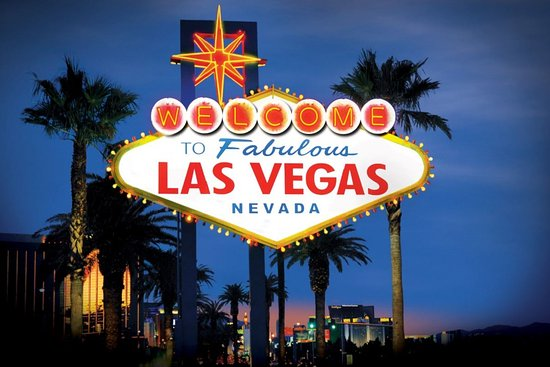
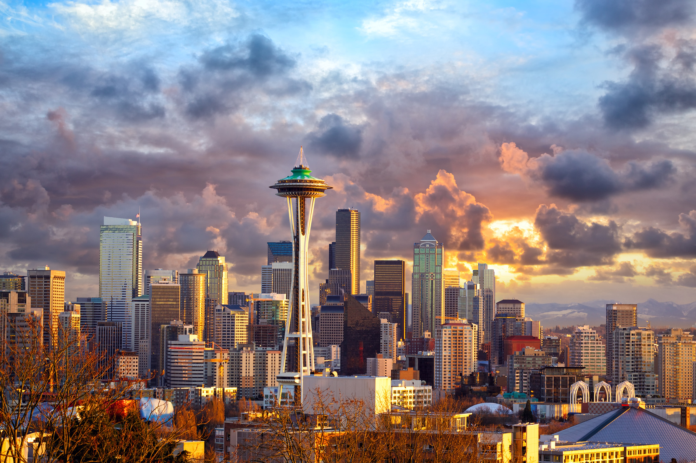

- Las Vegas 
- Seattle 
- New York City
Las Vegas, officially the City of Las Vegas and often known simply as Vegas, is the 28th-most populated city in the United States, the most populated city in the state of Nevada, and the county seat of Clark County. The city anchors the Las Vegas Valley metropolitan area and is the largest city within the greater Mojave Desert.Las Vegas is an internationally renowned major resort city, known primarily for its gambling, shopping, fine dining, entertainment, and nightlife. The Las Vegas Valley as a whole serves as the leading financial, commercial, and cultural center for Nevada.
The city bills itself as The Entertainment Capital of the World, and is famous for its mega casino–hotels and associated activities. It is a top three destination in the United States for business conventions and a global leader in the hospitality industry, claiming more AAA Five Diamond hotels than any other city in the world.Today, Las Vegas annually ranks as one of the world's most visited tourist destinations. The city's tolerance for numerous forms of adult entertainment earned it the title of Sin City, and has made Las Vegas a popular setting for literature, films, television programs, and music videos.
Seattle is a seaport city on the west coast of the United States and the seat of King County, Washington. With an estimated 704,352 residents as of 2016, Seattle is the largest city in both the state of Washington and the Pacific Northwest region of North America. In July 2013, it was the fastest-growing major city in the United States and remained in the Top 5 in May 2015 with an annual growth rate of 2.1%.
In July 2016, Seattle was again the fastest-growing major U.S. city, with a 3.1% annual growth rate. The city is situated on an isthmus between Puget Sound (an inlet of the Pacific Ocean) and Lake Washington, about 100 miles (160 km) south of the Canada–United States border. A major gateway for trade with Asia, Seattle is the fourth-largest port in North America in terms of container handling as of 2015.

The Big Apple, The City That Never Sleeps, Gotham: whatever its name, New York City has something for every taste and every traveler. From incredible art galleries and museums to some of the world’s best restaurants, New York’s many offerings are well known to most visitors. But to explore the real New York, the vibrant, charming, and predictably unpredictable city that engenders such passion among locals and envy among visitors, it helps to have an insider’s perspective. Which sexy speakeasies do native New Yorkers actually go to on the Lower East Side? Where do Brooklynites grab coffee during an afternoon spent wandering Cobble Hills’ brownstone-lined streets? T+L’s New York City travel guide offers a curated, insider-approved list of the best things to do, drink, eat, and shop (not to mention where to stay) in each of the city’s distinct neighborhoods.
Needless to say, New York is a city in constant flux, with swanky new hotels, restaurants, bars, and attractions popping up all the time. Whether you want to check out the hottest new cocktail bars by world-renowned mixologists or the best artisanal shops in the most up-and-coming neighborhoods, we’ve got you covered. T+L editors are always out on the town vetting the latest openings in order to bring you the latest news. Check back often for updates and additions to our New York city guide.